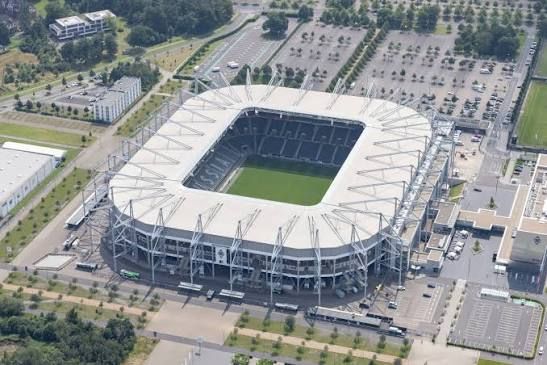
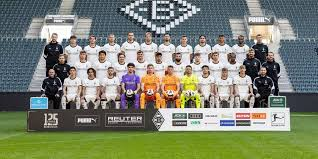

Founded
1900
Germany
Discover the history, stadium, legendary players, major trophies, records, and interesting facts about Borussia Mönchengladbach.
Introduction
Borussia Mönchengladbach is a professional soccer club based in Mönchengladbach, Germany. Founded in 1900, the club became one of the strongest teams in German soccer during the 1970s. Mönchengladbach is known for its black, white, and green colors, attacking soccer, passionate supporters, and successful history.
The club plays its home matches at Borussia-Park. The stadium opened in 2004 and replaced the historic Bökelbergstadion, where many of the club's greatest teams played. Borussia-Park provides a modern home for the club and its supporters.
Borussia Mönchengladbach is often called "Die Fohlen," which means "The Foals." The nickname became popular because of the young, energetic, and attacking team that developed during the club's rise in the 1960s and 1970s.
Many famous players have represented the club, including Jupp Heynckes, Günter Netzer, Berti Vogts, Allan Simonsen, Herbert Wimmer, Rainer Bonhof, and Lothar Matthäus. These players helped create one of the most successful periods in the club's history.

About the Club
Borussia Mönchengladbach was founded in 1900 and gradually developed within German soccer. The club spent much of its early history competing at the regional level before beginning its rise toward national success during the middle of the 20th century.
Mönchengladbach won the DFB-Pokal in 1960, giving the club one of its first major national trophies. The team later earned promotion to the Bundesliga in 1965, the same year that Bayern Munich entered Germany's top division.
The club developed an exciting young team under manager Hennes Weisweiler. Its fast and attacking style of soccer helped create the nickname "Die Fohlen." Young players such as Günter Netzer, Berti Vogts, Jupp Heynckes, and Herbert Wimmer became important figures in the team's rise.
Borussia Mönchengladbach won its first Bundesliga championship during the 1969-70 season. The club successfully defended the title the following season, becoming the first team in Bundesliga history to win consecutive league championships.
The 1970s became the greatest period in the club's history. Mönchengladbach competed closely with Bayern Munich for control of German soccer. The rivalry between the two clubs helped define the Bundesliga during that era.
Mönchengladbach won three consecutive Bundesliga championships in 1975, 1976, and 1977. Combined with its earlier titles, the club won five German league championships during the decade.
The club also became highly successful in European competition. Borussia Mönchengladbach won the UEFA Cup in 1975 and again in 1979. The team also reached the European Cup final in 1977, where it faced Liverpool in Rome. Liverpool won the match 3-1.
After the great teams of the 1970s, Mönchengladbach experienced periods of change and rebuilding. The club continued producing talented players and later won another DFB-Pokal in 1995.
Borussia Mönchengladbach eventually moved from the Bökelbergstadion to Borussia-Park in 2004. Although the club has not repeated the dominance of the 1970s, its historic championships, European trophies, and attacking tradition remain an important part of German soccer history.

Club Details
1900
Mönchengladbach, Germany
Borussia-Park
Black, White, and Green
Club Record
Jupp Heynckes is Borussia Mönchengladbach's legendary all-time goalscorer. He scored 195 Bundesliga goals for the club and was one of the most important attacking players during Mönchengladbach's successful era in the 1970s.
Heynckes helped the club win several Bundesliga championships and European trophies. After his playing career, he also became a highly successful manager and later won major trophies with clubs including Bayern Munich and Real Madrid.
Success
Legendary Players
Borussia Mönchengladbach has had a player win the Ballon d'Or while representing the club.
Danish forward Allan Simonsen won the Ballon d'Or in 1977 while playing for Borussia Mönchengladbach. He was an important member of the club's successful teams during the 1970s and helped Mönchengladbach win domestic and European trophies.
Did You Know?